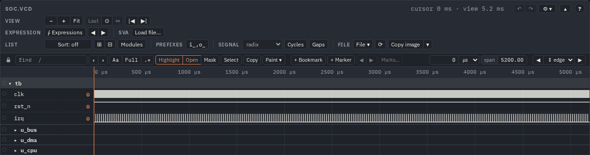
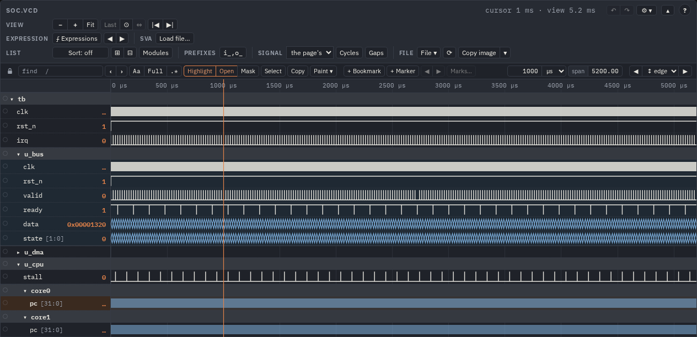
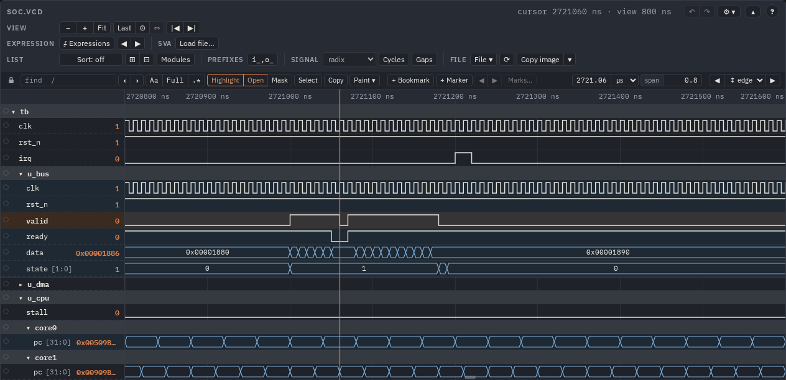
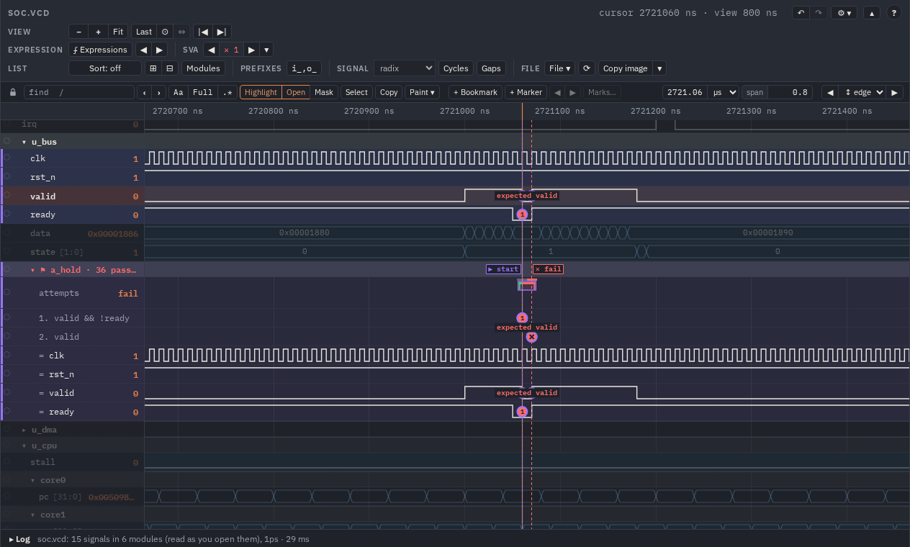
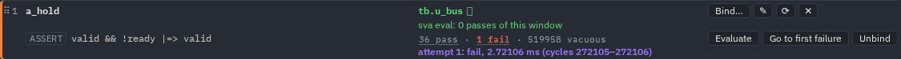

Large dumps in VS Code
A dump of hundreds of megabytes or of gigabytes is not read whole in the VS Code tab. It opens with every module
and signal at once, and the values of the signals you look at are read from its FST on the host, for the time in sight. This guide
says what that changes: what you see at first, what is drawn as a summary, what needs a signal whole, and what to do when the
sva program the tab reads with is missing.
The example
The pictures are of a dump made by tests/guide_shots.py: soc.vcd, 24 MB, a 100 MHz clock over 5.2 ms
(1 040 000 changes), a valid / ready stream in u_bus with a burst every 20 µs, two CPU cores whose pc changes
every few cycles. It is opened with wavelens.lazy set to always; a VCD of 64 MB or more opens the same way by
itself. The tab's host is faked, its reads are the real sva vcd and sva eval the extension runs.
What is large
The setting wavelens.lazy decides:
| Value | Read as it is needed |
|---|---|
auto (the default) | an FST of 4 MB or more, a VCD of 64 MB or more |
always | every dump |
never | none: every dump read whole, cut to dumpBudget (3 000 000 changes) |
A dump read whole crosses to the tab as one VCD text per read; that is what makes a 1 GB dump take minutes and the memory of the window. Read as it is needed, the same dump opens in seconds: a 1 GB / 200 ms dump draws its 9 top-level signals in 3 s with 17 MB of the page's memory.
What opens first
- A VCD is made an FST once, on the host (
sva fst --no-types, a few seconds for 500 MB, a notification while it runs). The FST is kept in the extension's storage by the VCD's path, size and time, so the next open of the same dump reads it at once (the 16 newest are kept). An FST is used as it is. - Its header is read (
sva vcd --header): every module and every signal, no value. The tab shows them at once, the top level open and its modules folded. The log line under the waves says soc.vcd: 15 signals in 6 modules (read as you open them). - The signals on the screen are read (
sva vcd --codes): a row says reading… for a moment, then its waves. Open a module and its signals are read the same way.

u_bus, u_dma and u_cpu are
folded and nothing of them is read yet.Summary bars and exact windows
A row is first read over the whole dump, as a summary:
- A signal that changes at most
lazyKeeptimes (16 384) comes whole: every change, as in a small dump. - A busier one — a clock, a counter, a pc — comes as
lazyBuckets(2048) buckets of the dump. A bucket of one or two changes is exact; a denser one is drawn as a bar up to its last change. The value column and the tooltip say…there, never a value that may be wrong.

pc rows change too often for their bucket: bars, and
… in the value column at the cursor (1 ms). valid, ready, irq change rarely enough
to be read whole.Zoomed in, the busy rows on the screen are read again for the view and half a span on each side, 150 ms after the zoom or
the scroll stops (one read for a burst of wheel steps). A row is exact as soon as it changes at most lazyKeep times in
that window. A read made stale by another jump is stopped and its sva killed. A draw never waits for a read: until the
window comes, the row shows its summary, hatched where you are zoomed in further than it was read.

pc value, the values in
the column.A row scrolled away or out of its window goes back to its summary at once; the windows held are at most lazyHeld
changes (2 000 000) in all. The narrowest view is a millionth of the dump, but at most 1 ns.
The edge search ([e ]e, Tab), the range's counts, the cycles between two times and the tooltip work where a row is held exactly; elsewhere they say zoom in. Never a wrong count.
What needs a signal whole
Some features need every change of the signals they use, over the whole dump: the FSM panel (and fsm_stats,
fsm_go), the cycles, assertions and expressions, Save as WaveLens. They read such a signal whole first, when it
changes at most lazyWhole times (1 000 000); from then on it is a row like any other.
A busier one is refused, with a message that names it: tb.clk changes 1,040,000 times, more than lazyWhole (1,000,000): the cycles needs every change of it, and this large dump is read by the window. The rest of the page goes on. What else is different:
- Gaps take a busy row by its summary: a dense bucket is busy throughout, the changes between are exact, a busy clock's cycles counted by its period. The gaps are those of the whole dump, their ends within a bucket.
- The bus decoder reads its ports' signals whole first; a port too busy for that says so, the other ports are decoded.
- WaveDrom reads the rows over its time first and refuses one still held in part there.
- A struct of the
.svtypes is filled as its signal is read; the analog form is not drawn over a summary. - Expressions over a signal too busy to read whole are refused.
Assertions by the CLI
An assertion that reads a signal too busy to read whole — any assertion clocked by that 100 MHz clock — is evaluated by the
sva program instead, over the whole dump: sva eval on the dump's FST, the names resolved as the panel resolves
them (a 5 M-cycle dump in about 5 s). Bind it as usual (Assertions); what comes back:
- the counts of the whole dump: passes, failures, vacuous, …;
- the failures and the attempts without a verdict, listed: the first 20 000 (the binding's line says when there are more), on the waves and for Go to first failure and ]f [f;
- the passes are counted, and listed only for the time in sight once it is 20 000 cycles or fewer: 0.3 s after the zoom stops,
one more
sva evalof that window and a span on each side.

sva eval. a_hold (a beat offered stays offered until it is taken),
bound to tb.u_bus: the beat dropped at 2.721 ms while ready is low.
An attempt that starts before such a window and ends in it is not drawn. Why reads the signals over the attempt first. These results are evaluated again each time, not kept in the browser (a saved state finds its attempt by its cycles). A window whose evaluation failed is said on the binding's line and asked again after 10 s or once the view leaves it.
Compare and runs
A compare is of the window in sight (Compare two runs), and on a large dump only that window is read:
- Compare… runs
sva diffon the host over the window; A is the FST the tab reads, a large VCD as B is made an FST once (kept as the tab's are). Neither dump is sent to the tab, only B's values of the signals that differ there (at most 32 MB; more: the bands without B's values, said). - A's rows are read exact over the window before they are compared.
- The Runs panel does the same with a kept run (Runs): a run of gigabytes costs its window. A run shown as A is read as it is needed when it is large.
The sva program
Every read above is the sva program on the host (the Linux machine of Remote-SSH or WSL). The extension carries two:
Linux x86_64 and Windows x86_64, each used on its own host. A macOS or Linux arm64 host needs one built there
(cargo build --release -p sva-cli in sva/ of the repository), else sva on the PATH is used. The
setting wavelens.sva names another one.
WaveLens: Set the sva program… (also in the tab's ⋯ menu) lists the ones found on the machine — the one set, the one inside
the extension, the PATH, ~/.cargo/bin, the workspace's builds (bin/windows-x86_64/, sva/target/release/,
any sva.exe of it), C:\Tools\wavelens — each tried with --help (✓ runs here, ⚠ why not), or
Browse… for its file, or The default. The one picked goes to wavelens.sva.
Without one a large VCD is read whole instead, as before the lazy reading, and the tab says why; VS Code offers Set the sva program…. Once it is set, the tabs read whole for want of it are offered a read again, lazy. An FST cannot be read without it.
sva on the host. The dump read whole, the reason in the bar and in the log.Caps and errors
| What | Limit | Then |
|---|---|---|
a VCD read whole for want of sva | 256 MB | larger: an error naming the fix (Set the sva program…) instead of a tab loading for minutes |
| one read of signals | 48 MB of text | more than 48 MB of changes at once: fewer signals, or a shorter window |
| one read's time | 120 s (WAVELENS_CODES_TIMEOUT, ms) | no answer in 120 s, the read stopped |
an evaluation by sva eval | 10 min (WAVELENS_SVA_TIMEOUT, ms) | said on the binding's line |
sva programs of a tab at once | 2 | the others wait their turn; an evaluation never takes both, so the waves are still read meanwhile |
- A row the reader could not read says not read: … on the row and is not asked again until the dump is read again (⟳, R).
- An FST written over by a new run while its tab is open is not read under the old header: the signals not read yet say changed on the
disk since it was read: ⟳ (R) reads it again, once.
wavelens.autoReloadreads it again at once. - An
svaolder than the extension (no--lod, no--cycle-runs) is said with WaveLens: Set the sva program….
Converting once
The FST the tab makes of a large VCD lives in the extension's storage. To keep it beside the dump — smaller, shared, and opened
without a conversion next time — right-click the .vcd in the Explorer: WaveLens: Convert to FST (also in the tab's
title menu) writes tb.fst beside tb.vcd, with the FSM state names of tb.types.json in it. Open the
FST: from 4 MB it is read as it is needed.
The CLI's own
The reads of the tab are commands you can run yourself (USAGE.md § An FST as VCD text, § A VCD as an FST):
sva fst soc.vcd # soc.fst beside it sva vcd soc.fst --header # every module and signal, no value sva vcd soc.fst --from 2720us --to 2722us --signals 'tb.u_bus.*' --out burst.vcd sva eval --waves soc.fst --sva bus_checks.sv --scope tb.u_bus --max-attempts 100 sva diff golden.fst soc.fst --from 2ms --to 3ms # two large dumps compared as streams
A piece cut with sva vcd --from --to is small enough to open whole, on a page or in a browser
(From a dump to a page).